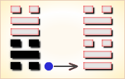
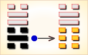
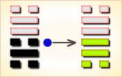
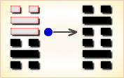
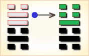
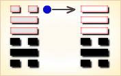

周易第47卦_困卦(泽水困)_兑上坎下
如有疑问互相交流，微信：470283584
周易第47卦详解
困卦原文
困。亨，贞，大人吉，无咎。有言不信。
象曰：泽无水，困。君子以致命遂志。
白话文解释
困卦：通泰。卜问王公贵族之事吉利，没有灾难。筮遇此爻，有罪之人无法申辩清楚。
《象辞》说：本卦上卦为兑，兑为泽；下卦为坎，坎为水，水渗泽底，泽中干涸，是困卦的卦象。君子观此卦象，以处境艰难自励，穷且益坚，舍身捐命，以行其夙志。
《断易天机》解
困卦兑上坎下，为兑宫初世卦。此卦君子受困于小人，阳为阴蔽，大人则吉而无咎。所闻之言没有诚信。
北宋易学家邵雍解
泽上无水，受困穷之；万物不生，修德静守。
得此卦者，陷入困境，事事不如意，宜坚守正道，等待时机。
台湾国学大儒傅佩荣解
时运：身名皆困，不如安命。
财运：财乏势危，不如归去。
家宅：安全第一；女寡之象。
身体：肾水已亏，险在眼前。
传统解卦
这个卦是异卦（下坎上兑）相叠。兑为阴为泽喻悦；坎为阳为水喻险。泽水困，陷入困境，才智难以施展，仍坚守正道，自得其乐，必可成事，摆脱困境。
大象：水在泽下，万物不生，喻君子困穷，小人滥盈之象。
运势：诸事不如意，所谓龙游浅水遭虾戏。
事业：境况十分不佳，遭受到很大的困难。人生面临巨大的考验，如采取不正当的手段，会愈陷愈深。相反，如身陷困逆境地而不失节操，自勉自坚，泰然处之，不失其志，终能成事。
经商：面临激烈竞争，很有破产的可能。切勿失望，而应在困境中奋斗。为此，只能靠平日加强修养。认真反省自己的行为，总结教训，重新奋起，但也不宜浮躁，应缓慢而进。同时，更要警惕因致富发财，得意忘形而陷入新的困境。
求名：欲速则不达。应以谦虚的态度，缓慢前进，应有坚定的志向，唯有志才能促成事业的成功。
婚恋：以乐观态度冷静处理，尤应注重人品。
决策：聪明智慧，但怀才不遇。若不因困境而失去信心，坚持努力上进，放弃侥幸心理，锲而不舍，虽不一定能守全实现自己的理想，但终会有所成。
台湾张铭仁解卦
困：表示很大的困难被困住了，主大凶象，四大难卦第四卦。四处无援，最困难之时。事事很难再有进展，只好静待时机，是此时最好的选择。
解释：被困住。
特性：不满足感，不喜平淡生活，生活过于理想化，爱变化。自立自强，辛勤工作，善于用脑工作，不适合领导工作。
运势：不如意，被小人欺，劳而无功，破损之灾。一事难成，运衰也。宜守己待时。
家运：家庭之主有屈于下风，被内助压迫者，亦常生反弹，吵架滋事。为黑暗时期，宜忍辱负重，期待黎明到来。若不谨守正道者，有失和、破兆也。
疾病：危重之象，注意口腔咽喉，泌尿系统，甚至性病。
胎孕：胎安。将来劳碌命格。
子女：劳苦之命，但行为端正者，终可得福也。
周转：求人不如求己，凡事需量入为出。若为女色破财，当然求助无门。
买卖：不能如愿，有挫折。
等人：受到阻碍，不来或迟到。
寻人：途中可遇，来者自来也。
失物：不能寻回。
外出：困难多，慎重考虑。
考试：不理想。
诉讼：凡事不宜过于执着，防牢狱之灾。
求事：不得时亦不得意，再待时机。
改行：不宜。
开业：开业者须再待时。
周易第47卦初六爻详解
初六爻辞
初六。臀困于株木，入于幽谷，三岁不见。
象曰：入于幽谷，幽不明也。
白话文解释
初六：臀部被狱吏的刑杖打伤，被投入黑暗的牢房中，三年不见其人。
《象辞》说：进入了幽深的山谷，自然幽暗不明。
北宋易学家邵雍解
凶：得此爻者，有惊忧，或有丧服之灾。做官的会退职。
台湾国学大儒傅佩荣解
时运：渐入逆境，三年才转。
财运：材木生意，运送不易。
家宅：来往人少；男家卑微。
身体：大凶之兆。
初六变卦

初六爻动变得周易第58卦：兑为泽。这个卦是同卦（下泽上泽）相叠。泽为水。两泽相连，两水交流，上下相和，团结一致，朋友相助，欢欣喜悦。兑为悦也。同秉刚健之德，外抱柔和之姿，坚行正道，导民向上。
周易第47卦九二爻详解
九二爻辞
九二。困于洒食，朱绂方来，利用享祀。征凶，无咎。
象曰：困于洒食，中有庆也。
白话文解释
九二：酒醉未醒，穿着红色服装的蛮夷前来进犯，忧患猝临，宜急祭神求佑。至于占问出征，则有危险。其他事无大的灾祸。
《象辞》说：酒醉未醒，天予命赐公卿之服，因为九二之爻居下卦中位，这是将有喜庆之事的兆头。
北宋易学家邵雍解
平：得此爻者，得贵人提携，营谋获利，静吉动凶。做官的有晋升之机。
台湾国学大儒傅佩荣解
时运：有名有利，反为利用。
财运：由商起家，往前则凶。
家宅：富贵祭拜；婚姻即成。
身体：饮食无度，收心祷告。
九二变卦

九二爻动变得周易第45卦：泽地萃。这个卦是异卦（下坤上兑）相叠。坤为地、为顺；兑为泽、为水。泽泛滥淹没大地，人众多相互斗争，危机必四伏，务必顺天任贤，未雨绸缪，柔顺而又和悦，彼此相得益彰，安居乐业。萃，聚集、团结。
周易第47卦六三爻详解
六三爻辞
六三。困于石，据于疾藜。入于其宫，不见其妻，凶。
象曰：据于疾藜，乘刚也；入于其宫，不见其妻，不祥也。
白话文解释
六三：被石头绊倒，被蒺藜刺伤，历难归家，妻子又不见了，这是凶险之兆。
《象辞》说：被石头绊倒，被蒺藜刺伤，之所以屡遇艰难，因为六三阴爻居于九二阳爻之上，像弱者攀附于强暴之人，必受其挟持威凌。回到家中，妻子又不见了，这是不祥之兆。
北宋易学家邵雍解
凶：得此爻者，多难之时，宜守正谨慎。
台湾国学大儒傅佩荣解
时运：进退不得，身将不保。
财运：财去命弱，下场堪虑。
家宅：悼亡之屋。
身体：无可救药。
六三变卦

六三爻动变得周易第28卦：泽风大过。这个卦是异卦（下巽上兑）相叠。兑为泽、为悦，巽为木、为顺，泽水淹舟，遂成大错。阴阳爻相反，阳大阴小，行动非常，有过度形象，内刚外柔。
周易第47卦九四爻详解
九四爻辞
九四。来徐徐，困于金车，吝，有终。
象曰：来徐徐，志在下也。虽不当位，有与也。
白话文解释
九四：其人被关押在囚车里，慢慢地走来。真不幸，但最后还是被释放。
《象辞》说：行走缓慢，不求速进，志向卑微的表现。九四之爻居于九五之下，像人甘居下位，因为态度谦卑，倒能得人帮助。
北宋易学家邵雍解
凶：得此爻者，谋事虽然不利，但终有出险之时，从商者或周转不利。做官的闲职者会被起用。
台湾国学大儒傅佩荣解
时运：地位不当，受人所鄙。
财运：货物失去，急救可保。
家宅：慢些入住；事缓可成。
身体：长期劳累，恐得归天。
九四变卦

九四爻动变得周易第29卦：坎为水。这个卦是同卦（下坎上坎）相叠。坎为水、为险，两坎相重，险上加险，险阻重重。一阳陷二阴。所幸阴虚阳实，诚信可豁然贯通。虽险难重重，却方能显人性光彩。
周易第47卦九五爻详解
九五爻辞
九五。劓刖，困于赤绂。乃徐，有说，利用祭祀。
象曰：劓刖，志未得也。乃徐有说，以中直也。利用祭祀，受福也。
白话文解释
九五：割了鼻子，断了腿，被身着红色服装的蛮夷虏去。后来慢慢找到脱身的机会，终于逃脱回家。宜急祭神酬谢。
《象辞》说：割了鼻子，断了腿，是说其人不得志，身处险境。后来慢慢地脱离了险境，因为九五之爻居上卦中位，像人立身正直，自能化险为夷。宜祭祀鬼神，因为爻象指示：祈求鬼神保佑，承受其福荫。
北宋易学家邵雍解
凶：得此爻者，先难后易，不良者有诉刑之扰，丧服之忧。做官的先阻后顺。
台湾国学大儒傅佩荣解
时运：过刚必折，小心免祸。
财运：货物清理，慢慢售出。
家宅：鼻足之患；先疑后成。
身体：头脚之病，调养祷告。
九五变卦

九五爻动变得周易第40卦：雷水解。这个卦是异卦（下坎上震）相叠。震为雷、为动；坎为水、为险。险在内，动在外。严冬天地闭塞，静极而动。万象更新，冬去春来，一切消除，是为解。
周易第47卦上六爻详解
上六爻辞
上六。困于葛藟，于臲卼，曰动悔。有悔，征吉。
象曰：困于葛藟，未当也。动悔有悔，吉行也。
白话文解释
上六：被葛藟绊倒，被小木桩刺伤，处境如此艰难，不宜有所行动，否则悔上加悔。至于占问出征则吉利。
《象辞》说：被葛藟绊倒，因为行为不得当。悔悟到动则招悔，必能谦慎行事丽逢吉利。
北宋易学家邵雍解
平：得此爻者，防惊忧丧服，惟商人、旅行者利有攸往。做官的会有刑罚束缚之忧。
台湾国学大儒傅佩荣解
时运：厄运将终，收心努力。
财运：久货可出，方可获利。
家宅：修整旧宅；厘清瓜葛。
身体：心神不安，迁地静养。
上六变卦

上六爻动变得周易第6卦：天水讼。这个卦是异卦（下坎上乾）相叠。同需卦相反，互为“综卦”。乾为刚健，坎为险陷。刚与险，健与险，彼此反对，定生争讼。争讼非善事，务必慎重戒惧。